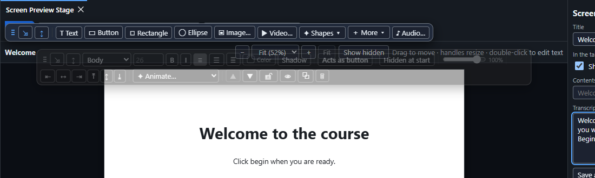
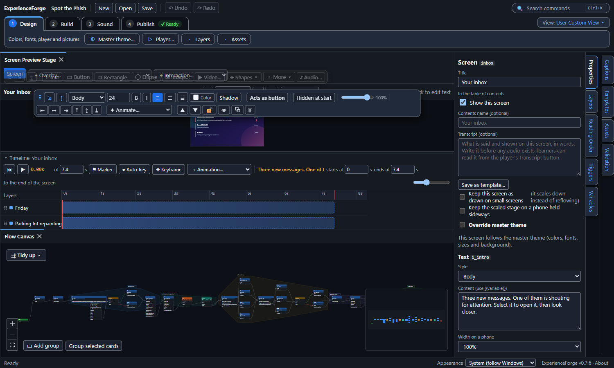
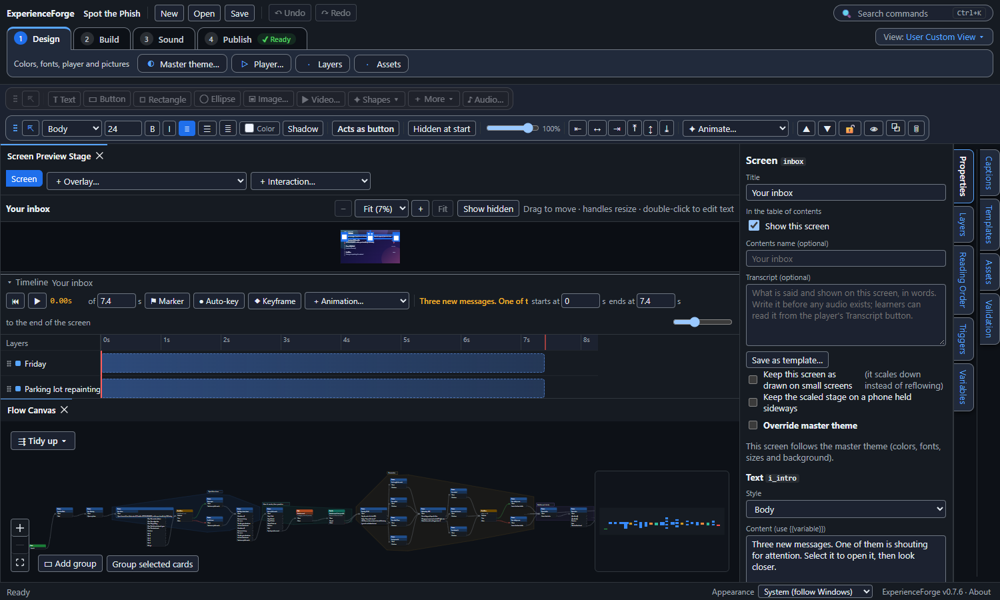
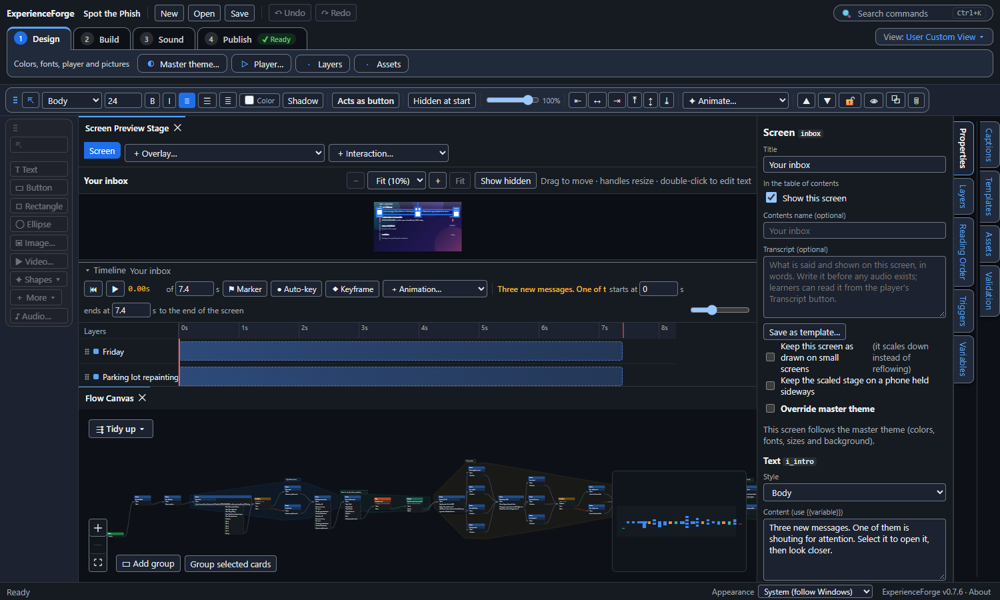
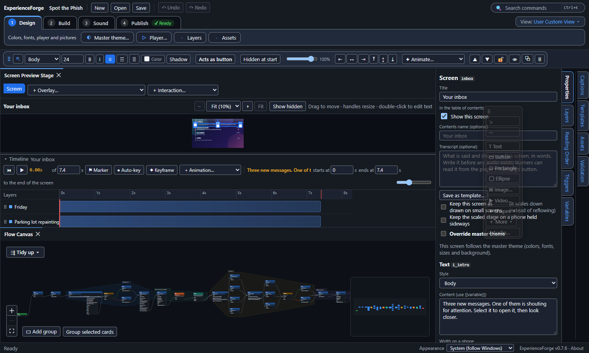

Move, dock and turn the stage toolbars
The stage has two toolbars. One adds things (Text, Button, Rectangle, Ellipse, Image, Video, Shapes, More, Audio). The other holds the tools for whatever is selected (fill, text, alignment, animation, lock and so on). Both start docked: the add toolbar in the top row and the item tools in the row below it, under the Design, Build, Sound and Publish tabs. You can let either one float over the whole app and put it over any panel. They are drawn like the row of tools under the Design, Build, Sound and Publish tabs.
- Move one: drag its grip (the dots at the left). Both toolbars stay where you put them, whatever you select. Double-click the grip to put one back at its first place. The arrow keys on the grip nudge it.
- Dock one: press the dock button next to the grip. The add toolbar goes to a row under the Design, Build, Sound and Publish bar; the item tools go to the row below it. Press the same button again to let it float. A toolbar you have never moved starts docked.
- Dock it somewhere else: drag the grip. The dock spots show while you drag: two rows at the top, one on the left and one on the right. Drop it on the one you want. A toolbar in the top rows runs across; one on a side runs up and down. Both toolbars can share a row. With the keyboard, press an arrow key on a docked toolbar's grip: up for the top row, down for the second row, left or right for that side.
- Turn a floating one up and down: press the turn button next to the grip, and press it again to lay it across.
Your choices are kept for next time and are not part of the course.
The toolbars dim instead of disappearing. Each toolbar is always there, so nothing jumps about as you work. When it does not fit what you are doing it turns grey and faint:
- With no screen on the stage, both are dim and cannot be used.
- With a screen on the stage but no item selected, the Add toolbar is lit and the item tools are dim.
- With an item selected, the item tools are lit and the Add toolbar is dim. It still works: point at it or Tab into it and it lights up, so you can keep adding items.
A screen on the stage and nothing selected:

Both toolbars floating over the app: the add toolbar has been dragged to the top right, and the tools for the selected text sit over the timeline, outside the stage.

Both toolbars docked: the add toolbar in the first row under the Design, Build, Sound and Publish bar, and the tools for the selected item in the row below it. The whole screen you are designing is clear below them.

The add toolbar docked down the left side, which runs up and down, with the item tools in a row across the top.

A floating toolbar turned up and down with its turn button, here the add toolbar beside the stage.

The choice is remembered on this computer. It is not part of the course.